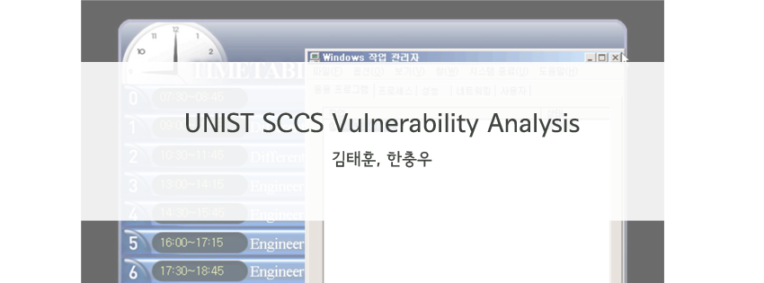

이름 : 김태훈
닉네임 : carpedm20
B.S. : Computer Science and Engineering, Electrical Engineering in UNIST.
관심분야 :
- Mobile Reverse Engineering
- Machine Learning
- Web Service
Mail : carpedm20@gmail.com
Github : https://github.com/carpedm20
소속 :
- UNIST 보안 동아리 HeXA (2012 ~ )
- UNIST MSN Lab (2012 ~)
- CodeRed(2013 ~)
활동기록 :
- 2013 HolyShield Hacking Festival, 1위 (CodePink)
- yes24 로그인 보안 취약점 발견 - 관련 기사
- 2013 화이트햇 콘테스트 단체전 본선, 3위 (HeXA)
- 2013 화이트햇 콘테스트 단체전 예선, 5위 (HeXA)
- LINE 어플리케이션 리버싱 및 프로토콜 분석 - 분석글
- KakaoTalk 리버싱 및 로봇 제작 - 헥사봇
- 2013 HDCon 예선, 12위 (HeXA)
- 2013 Secuinside 예선, 35위 (HeXA)
- Asia Student Supercomputing Challenge 13, Finalist (UNIST)
- UNIST 출석 체크 시스템 취약점 발견 및 보고
- UNIST 정보보안 동아리 HeXA 3대 회장 (2012-2013)
Name : Kim Tae Hoon
ID : carpedm20
B.S. : Computer Science and Engineering, Electrical Engineering in UNIST.
Interest :
- Mobile Reverse Engineering
- Machine Learning
- Web Service
Mail : carpedm20@gmail.com
Github : https://github.com/carpedm20
Group :
- UNIST hacking club HeXA (2012 ~ )
- UNIST MSN Lab (2012 ~)
- CodeRed(2013 ~)
Activity :
- 2013 HolyShield Hacking Festival, 1st place (CodePink)
- Find login vulnerability in YES24 - Related article
- 2013 Korea Whitehat Contest Hacking Festival the final, 3rd place (HeXA)
- 2013 Korea Whitehat Contest Hacking Festival the quals, 5th place (HeXA)
- LINE application reversing & protocol analysis - Analysis
- KakaoTalk application reversing & creat robot - HeXA Bot
- 2013 HDCon the quals, 12th place (HeXA)
- 2013 Secuinside the quals 35th place (HeXA)
- Asia Student Supercomputing Challenge 13, Finalist (UNIST)
- Find a venerability of electronic attendance system of UNIST
- 3rd club president of UNIST hacking club HeXA (2012-2013)
 저는 어려서부터 물리를 좋아했기 때문에 고등학교때까지 물리학자의 꿈을 키워왔지만, UNIST에서 프로그래밍 수업, 단 한과목에 꽃혀 컴퓨터 공학을 전공으로 선택하게 되었습니다. 그리고 2012년 여름, 드라마 '유령'에 등장하는 해커의 간지에 반해 해킹 공부를 시작했고, 그 해 9월 교내 보안동아리 'HeXA'에 가입과 동시에 회장이 되었습니다. 'HeXA'의 회장으로 지내면서 '모조 킬러','로봇','포탈봇','식단봇','헥사봇','컴공아 일하자' 등 학생들(및 자기자신)의 편의를 생각한 프로그램을 개발했습니다. 현재는 교내 'Mobile Social Network Lab'에서 연구를 진행하고 있으며, 모바일 어플리케이션 리버싱과 세상을 바꿀 서비스 개발에 관심이 많다고 합니다. 저는 아직 보여줄 것이 많습니다.
저는 어려서부터 물리를 좋아했기 때문에 고등학교때까지 물리학자의 꿈을 키워왔지만, UNIST에서 프로그래밍 수업, 단 한과목에 꽃혀 컴퓨터 공학을 전공으로 선택하게 되었습니다. 그리고 2012년 여름, 드라마 '유령'에 등장하는 해커의 간지에 반해 해킹 공부를 시작했고, 그 해 9월 교내 보안동아리 'HeXA'에 가입과 동시에 회장이 되었습니다. 'HeXA'의 회장으로 지내면서 '모조 킬러','로봇','포탈봇','식단봇','헥사봇','컴공아 일하자' 등 학생들(및 자기자신)의 편의를 생각한 프로그램을 개발했습니다. 현재는 교내 'Mobile Social Network Lab'에서 연구를 진행하고 있으며, 모바일 어플리케이션 리버싱과 세상을 바꿀 서비스 개발에 관심이 많다고 합니다. 저는 아직 보여줄 것이 많습니다.
Since I was young, I really love Physics so I had dreamed to be a Physicist. However, after taking just one course in UNIST, which was Engineering Programming, I've fallen in love with programming and eventually chose Computer Science as my major. In the summer of 2012, I became a fan of Hacker who was the character of a TV show 'Ghost', and started to study hacking. Besides, I joined and concurrently become the club president of 'HeXA', a hacking club in UNIST. As the leader of 'HeXA', I made several programs like 'Mozo Killer', 'UNIST robot', 'Portal Bot', 'Dieat Bot', 'HeXA Bot' and 'Comgong-job'. These programs were designed to provide convenience to students(and also myself). Nowayds, I work at Mobile Social Network Lab as an Inter, and I have interest in Mobile Application reversing and developing a service which can be a world-changer. I have lots of things to show you.

 동아리 'HeXA'의 이름으로 처음 참가했었던 대회는 '2012 Anlab Wave'입니다. 한 문제도 풀어보지 못하고 우왕좌왕했던 그때, 누구보다 빠르게 문제를 풀어갔던 한 해커를 보면서, 저희는 '언젠가 우리도 저런 해커가 되자'라고 다짐했었습니다. 그로부터 딱 1년 후 저희는 전국 대회 3위라는 성적을 거두었습니다. 동아리 창립이래 첫 수상(+상금)이었던만큼 저에게는 잊지못할 평생 잊지 못할 순간입니다.
동아리 'HeXA'의 이름으로 처음 참가했었던 대회는 '2012 Anlab Wave'입니다. 한 문제도 풀어보지 못하고 우왕좌왕했던 그때, 누구보다 빠르게 문제를 풀어갔던 한 해커를 보면서, 저희는 '언젠가 우리도 저런 해커가 되자'라고 다짐했었습니다. 그로부터 딱 1년 후 저희는 전국 대회 3위라는 성적을 거두었습니다. 동아리 창립이래 첫 수상(+상금)이었던만큼 저에게는 잊지못할 평생 잊지 못할 순간입니다.
 The first competition that I participated with HeXA was '2012 Anlab Wave'. At that time, we couldn't any problems and were just busy as nailer. However, when we found that only one hacker solved most of the problems for the first time, I dreamed and decided to become a Hacker like him. After 1 years later, we can win 3rd place at the national competiton. It was the first award (with prize) since the foundation of HeXA, so I will never forget this moment, forever.
The first competition that I participated with HeXA was '2012 Anlab Wave'. At that time, we couldn't any problems and were just busy as nailer. However, when we found that only one hacker solved most of the problems for the first time, I dreamed and decided to become a Hacker like him. After 1 years later, we can win 3rd place at the national competiton. It was the first award (with prize) since the foundation of HeXA, so I will never forget this moment, forever.

 슈퍼컴퓨팅과 클러스터 구축에 대한 관심에서 시작하게 되었고, 상하이 자우통 대학교에서 Fanalist 라는 결실을 얻을 수 있었습니다. Computer Science 분야에 다양한 분야를 경험할 수 있었던 기회였으며, 팀원들과 함께 앞으로 남은 대회에서는 더 나은 결과를 얻기위해 노력하고 있습니다.
This was started from the interst of Super Computing and a construction of cluster. Finally, we won the Finalist competing with the competitors, in the Shanghai Jiatong University. I could learn the diverse area in Compuer Science and I still working with our team member to win at the future competitions.
슈퍼컴퓨팅과 클러스터 구축에 대한 관심에서 시작하게 되었고, 상하이 자우통 대학교에서 Fanalist 라는 결실을 얻을 수 있었습니다. Computer Science 분야에 다양한 분야를 경험할 수 있었던 기회였으며, 팀원들과 함께 앞으로 남은 대회에서는 더 나은 결과를 얻기위해 노력하고 있습니다.
This was started from the interst of Super Computing and a construction of cluster. Finally, we won the Finalist competing with the competitors, in the Shanghai Jiatong University. I could learn the diverse area in Compuer Science and I still working with our team member to win at the future competitions.

 가톨릭대학교 정보보안동아리 CAT-Security에서 주최한 대회에서 1위라는 성적을 얻었습니다. (CodePink)
가톨릭대학교 정보보안동아리 CAT-Security에서 주최한 대회에서 1위라는 성적을 얻었습니다. (CodePink)
 I won the golden medal from 2013 holyshield hacking festival wich was held by The Catholic University of Korea. (CodePink)
I won the golden medal from 2013 holyshield hacking festival wich was held by The Catholic University of Korea. (CodePink)


이렇게 시작하게 되었습니다
- 하데스(드라마 '유령'의 해커)가 너무나도 멋있어 보였습니다
- 컴퓨터 공학부 학생이라면 해킹 정도는 배워야 된다고 생각했습니다
- 해킹 스터디 모집글을 올렸다가 HeXA에서 회장을 맡아볼 생각이 없냐고 연락이 왔습니다
이러한 활동을 했습니다
- 2012.09 HeXA 3대 회장
- 2012.09 HeXA 로고 디자인
- 2012.11 재학생 대상 제 1회 C++ 공개 강의
- 2012.12 UNIST 출석체크 시스템 취약점 발견 및 보고
- 2013.09 제 1회 HeXA CTF 1위
- 2013.09 UNIST 재학생 대상 제 1회 C++ 튜터링
- 2013.09 UNIST 대한민국 화이트햇 콘테스트 단체전 3위
이렇게 둘러 보실 수 있습니다
- 웹 사이트 : http://hexa.us.to
- Facebook : https://www.facebook.com/unist.hexa
How I started
- I thought 'Hades'(a hacker who was character of tv drama 'Ghost') was so cool
- I thought every computer science students have to study Hacking
- After I posted recruitment for hacking study, 'HeXA' contact and ask me to lead HeXA
What I have done
- 2012.09 HeXA 3rd president of HeXA
- 2012.09 Design HeXA logo
- 2012.11 C++ public lecture for UNIST freshmen
- 2012.12 Find a vulnerability in electronic attendance system of UNIST
- 2013.09 the first HeXA CTF 1st place
- 2013.09 Tutoring C++ for UNIST freshmen
- 2013.09 Korea Whitehat Contest Hacking festival, 3rd place
What you can see
- Web site : http://hexa.us.to
- Facebook : https://www.facebook.com/unist.hexa


이렇게 시작하게 되었습니다
- 전자 출결 기계에서 윈도우 오류창이 떠있는것을 보았습니다
- 전자 출결 기계에 동아리 로고를 띄우고 싶었습니다
이런 도구와 취약점이 사용되었습니다
- Metasploit : windows xp의 유명한 취약점 MS08-067을 이용해 remote shell을 얻음
- ollydbg : 추출한 출결 프로그램을 리버싱
이렇게 세상이 변했습니다
- 학교 DB의 계정을 얻어 데이터 조작이 가능했습니다
- 교내 정보서비스팀에게 알리고, 피자를 먹을 수 있었습니다
이렇게 둘러 보실 수 있습니다
- 보고서 : 다운로드
How I started
- I saw an windows error message from the electronic attendance system
- I wanted to display our club logo on the electronic attendance systems
What I used
- Metasploit : using MS08-067 vulnerability, get a remote shell of attendance system
- ollydbg : reverse engineer the extracted attendange binary file
How the World changed
- I could access the student database of UNIST and edit the data
- I reported this vulnerability to School Information center, and could eat some pizza
What you can see
- Analysis : Download


이렇게 만들게 되었습니다
- UNIST 학사 공지들은 UNIST 포탈 사이트에 올라옵니다
- 물론 학생들은 귀찮아서 포탈에 잘 접속하지 않습니다
- 학생들(저를 포함)은 중요한 공지(기숙사비 납부, 주요 행사, 유용한 정보)들을 놓치기 쉽습니다
이런 도구와 언어가 사용되었습니다
- Paros : 포탈, 기숙사, 도서관 공지사항을 불러올 때 사용되는 url query의 정보를 얻습니다
- C# : 학생들이 직관적으로 사용할 수 있도록 GUI Application을 만듭니다
이렇게 세상이 변했습니다
- 학생들은 포탈에 로그인 하지않고 포탈, 기숙사, 도서관, 수업 공지를 볼 수 있습니다
- 여름방학 1주일간 밥먹고 이것만 만들었기 때문에 코딩 마라톤에는 자신이 생겼습니다
- 배포한 직후 학교에서는 홈페이지 리뉴얼을 시작했습니다
- 몇몇 query들이 작동하지 않아 이용자 수가 줄어들었고, 결국 프로젝트는 종료되었습니다
이렇게 둘러 보실 수 있습니다
- UNIST 로봇 소개글 : http://carpedm20.blogspot.kr/2013/03/robot.html
- 소스코드 : https://github.com/carpedm20/UNIST-robot
How I started
- UNIST's school anouncements are uploaded to UNIST portal web site
- Of course, students don't login to portal frequently because it is a little bit annoying
- Therefore, students(including me) easy to miss some important announcements(like boarding fee, major events, or useful information)
What I used
- Paros : To get URL queries for portal, dormitory and library announcements
- C# : To make intuitive GUI application for students
How the World changed
- Students could get the announcements quickly without login to poral, dormitory, or library web sites
- I made this application during the whole week, so I got some confidence in coding marathon
- After my first distribution, shcool started to renewal most of the sites
- After the renewal, some queries are not working, so this project become dead
What you can see
- UNIST Robot Introduction : http://carpedm20.blogspot.kr/2013/03/robot.html
- Source code : https://github.com/carpedm20/UNIST-robot


이렇게 만들게 되었습니다
- UNIST 로봇이 망했습니다
이런 도구와 언어가 사용되었습니다
- Paros : 포탈, 기숙사, 도서관 공지사항을 불러올 때 사용되는 url query의 정보를 얻습니다
- python : 학생들이 Facebook을 통해 정보를 얻을 수 있도록 봇을 만듭니다
이렇게 세상이 변했습니다
- 학생들은 포탈에 로그인 하지않고 포탈 공지를 볼 수 있습니다
- UNIST 로봇의 실수를 만회했습니다
이렇게 둘러 보실 수 있습니다
- 포탈봇 : https://www.facebook.com/hexa.portal
- 소스코드 : https://github.com/carpedm20/UNIST-portal-bot
How I started
- UNIST robot failed
What I used
- Paros : To get URL queries for portal announcements
- python : To create a robot which automatically uploads announcements to Facebook
How the World changed
- Students can get portal announcements whithout login to portal
- I recovered my failure UNIST Robot
What you can see
- Portal Bot : https://www.facebook.com/hexa.portal
- Source code : https://github.com/carpedm20/UNIST-portal-bot


이렇게 만들게 되었습니다
- 카카오톡으로 (여자)친구를 만들고 싶었습니다
이런 도구와 언어가 사용되었습니다
- .Net reflector : 초기버전 카카오톡 디컴파일
- apktool, dex2jar : 최신버전 카카오톡 디컴파일
- IL : C#의 컴파일된 언어. AES key를 고정시키기 위해 소스를 수정할때 사용
- python : 카카오톡 프로토콜 구현 및 헥사봇 알고리즘 구현
이렇게 세상이 변했습니다
- 모바일 어플리케이션 리버싱에 흥미를 갖게 되었습니다
- 카카오톡 프로토콜을 python 모듈로 구현해 배포했습니다
- (현재는 카카오톡 측의 요청으로 중단됨)
이렇게 둘러 보실 수 있습니다
- 헥사봇 소개글 : http://carpedm20.blogspot.kr/2013/08/blog-post.html
- 소스코드 : https://github.com/namongk/kakaotalk
- 카카오톡으로 여친 만들기 : https://www.dropbox.com/s/czsltbjvd24icdx/kakao_no_kakao_email.pdf
How I started
- I want to make a (girl) friend using KakaoTalk
What I used
- .Net reflector : Decompile of early version of KakaoTalk
- apktool, dex2jar : Decompile of latest version of KakaoTalk
- IL : C#'s binary compiled language. Used to fix the AES key which was ued in message encryption
- python : To create a python library for KakaoTalk protocol and algorithm of HeXA Bot
How the World changed
- I started to have a more interest in mobile application reversing
- I distributed the KakaoTalk python library as a module
- (Currently, the distribution is closed because of the request from KakaoTalk)
What you can see
- HeXA bot introduction : http://carpedm20.blogspot.kr/2013/08/blog-post.html
- Source code : https://github.com/namongk/kakaotalk
- Make a girlfriend with KakaoTalk : https://www.dropbox.com/s/czsltbjvd24icdx/kakao_no_kakao_email.pdf


이렇게 시작하게 되었습니다
- 한국 시장 밖에서는 LINE이 카카오톡을 제쳤다는 기사를 봤습니다 - LINE으로 (여자)친구를 만들고 싶었습니다
이런 도구와 언어가 사용되었습니다
- .Net reflector : 초기버전 LINE 디컴파일
- IL : C#의 컴파일된 언어. HTTPS 통신을 HTTP 통신으로 고정시키기 위해 사용
- python : LINE 프로토콜 구현
이렇게 세상이 변했습니다
- 모바일 어플리케이션 리버싱에 더더욱 흥미가 생겼습니다
- LINE 어플리케이션 분석 과정을 블로그에 공유했습니다
- LINE 보안실을 맡고 계신 분께서 연락을 주셨습니다
이렇게 둘러 보실 수 있습니다
- 분석글 : http://carpedm20.blogspot.kr/2013/09/line-reverse-engineering.html
How I started
- I saw an atricle that LINE beat KakaoTalk outside of Korea - I want to make a (girl) friend using LINE
What I used
- .Net reflector : Decompile of early version of LINE
- apktool, dex2jar : Decompile of latest version of LINE
- IL : C#'s binary compiled language. Used to fix the AES key which was ued in message encryption
- python : To create a python library for LINE protocol
How the World changed
- I started to have a great interest in mobile application reversing
- I shared the process of analysis on my blog
What you can see
- Analysis: http://carpedm20.blogspot.kr/2013/09/line-reverse-engineering.html

이렇게 시작하게 되었습니다
- 타대학교 취업 게시판에서 인턴쉽과 신입 채용 정보를 '가끔' 확인했습니다 - 제출 마감이 아깝게 지나간 채용 정보를 보면서 아쉬움을 느꼈습니다
이런 도구와 언어가 사용되었습니다
- Paros : 타대학교 취업 게시판의 url query들을 수집
- python : 새로 올라온 채용 정보를 자동으로 Facebook 페이지에 업로드
이렇게 세상이 변했습니다
- 학생들이(저를 포함) 채용 정보를 확인하기위해 매번 게시판에 들어갈 필요가 없습니다
이렇게 둘러 보실 수 있습니다
- 컴공아 일하자 : https://www.facebook.com/comgong.job
- 소스 코드 : https://github.com/carpedm20/comgong-job
How I started
- I 'sometimes' cheked online job boards of other universities to search approperiate intern to me - However, I occasionally missed some internships by a close call
What I used
- Paros : collect the url queries of online job boards
- python : upload new internship information to Facebook automatically
How the World changed
- Students (including me) don't have to access to the job boards to check some interships for their career
What you can see
- 컴공아 일하자 : https://www.facebook.com/comgong.job
- Source code : https://github.com/carpedm20/comgong-job

이렇게 시작하게 되었습니다
- 저는 영화 덕후입니다 - 지금까지 본 영화를 기록하고, 저만의 영화 리스트를 공유하고 싶었습니다
이런 도구와 언어가 사용되었습니다
- Django : 웹 프레임워크
- python : 영화 정보 파싱 및 웹 서버 구축
이렇게 둘러 보실 수 있습니다
- 무비덕 소개글 : http://carpedm20.blogspot.kr/2013/11/movieduk.html
- Github : https://github.com/carpedm20/movieduk
- 마땅한 외부 서버가 없어서 보여드릴 수는 없습니다
How I started
- I am a film geek - I want to record all movies that I've seen and want to share my personal movie lists with other people
What I used
- Django : web framework for MovieDuk
- python : parse movie information and build a web server
What you can see
- MovieDuk introduction : http://carpedm20.blogspot.kr/2013/11/movieduk.html
- Github : https://github.com/carpedm20/movieduk
- I don't have proper server, so I can't show you MovieDuk right now


이렇게 시작하게 되었습니다
- yes24에서 '대학생 모여라 스키장가자' 이벤트를 보게 되었습니다 - 2등을 하면 50만원 외식상품권을 얻을 수 있었습니다
이렇게 둘러 보실 수 있습니다
- 관련 기사 : http://dailysecu.com/news_view.php?article_id=5781
How I started
- There was an event on yes24 (an internet shopping mall in Korea) - The 2nd prize was a 500,000 KRW for buffet
What you can see
- Related article : http://dailysecu.com/news_view.php?article_id=5781